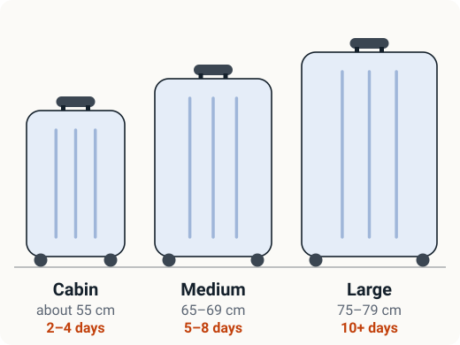

ट्रॉली बैग ऊँचाई के हिसाब से बिकते हैं। नीचे हर साइज इंच और cm में है, और यह भी कि वह कितने दिन की यात्रा के लिए ठीक है। किसी साइज की पूरी गाइड के लिए उस पर टैप करें।
ट्रॉली बैग के साइज: इंच और cm में
| इंच | cm | साइज | यात्रा |
|---|---|---|---|
| 18 इंच | 45.7 cm | छोटा केबिन बैग | 1–3 दिन |
| 20 इंच | 50.8 cm | केबिन | 2–4 दिन |
| 22 इंच | 55.9 cm | केबिन, ज़्यादातर भारतीय एयरलाइनों की ऊँचाई की सीमा पर | 2–4 दिन |
| 24 इंच | 61 cm | छोटा मीडियम | 4–6 दिन |
| 26 इंच | 66 cm | मीडियम | 5–8 दिन |
| 28 इंच | 71.1 cm | लार्ज (बड़ा) | 8–12 दिन |
| 30 इंच | 76.2 cm | लार्ज (बड़ा) | 10 से ज़्यादा दिन, परिवार के लिए |
| 32 इंच | 81.3 cm | बहुत बड़ा: 158 cm की सीमा ज़रूर देखें | लंबी यात्रा |
साइज का मतलब बैग की ऊँचाई है। विक्रेता हमेशा नहीं बताते कि इसमें पहिए शामिल हैं या नहीं, इसलिए लिस्टिंग पर पूरा साइज देखें।
हर साइज के लिए हमारी पसंद
-
केबिन साइज, IndiGo के लिए
Safari 55 cm Polycarbonate Cabin Trolley with Laptop Compartment
लिस्टिंग में साइज 55 x 35 x 25 cm है, यानी IndiGo, Akasa Air और SpiceJet के Boeing विमानों की केबिन सीमा के अंदर। ख़ाली बैग 2.7 kg का।
-
केबिन साइज, Air India के लिए
American Tourister Liftoff+ Small 55 cm Cabin Trolley, TSA Lock
सिर्फ़ 20 cm गहरा, इसलिए लिस्टिंग के साइज के हिसाब से Air India की 55 x 40 x 20 cm सीमा में फिट। ख़ाली बैग 2.2 kg का।
-
मीडियम, 65–69 cm
Kamiliant by American Tourister Rock-Lite 68 cm Medium Check-in Trolley
हमें मिली सबसे हल्की मीडियम ट्रॉली, 2.52 kg की। इसलिए 15 kg वाले टिकट में आपके सामान के लिए ज़्यादा वज़न बचता है।
-
लार्ज, 75–80 cm
Skybags Swirl 75 cm Large Check-in Trolley
लिस्टिंग में कुल 152 cm, यानी 158 cm की चेक-इन सीमा के अंदर। ज़्यादातर बड़ी ट्रॉलियाँ इस सीमा से बड़ी होती हैं।


हमने इन्हें क्यों चुना: केबिन, मीडियम और लार्ज पिक्स की तुलना (English)
भारतीय ट्रॉली के साइज cm में, इंच में
भारतीय ब्रांड ट्रॉली की ऊँचाई cm में लिखते हैं। यहाँ हर आम ऊँचाई इंच में है।
| लिस्टेड ऊँचाई | इंच | साइज |
|---|---|---|
| 55 cm | 21.7 इंच | केबिन |
| 56 cm | 22 इंच | केबिन |
| 65 cm | 25.6 इंच | मीडियम |
| 66 cm | 26 इंच | मीडियम |
| 68 cm | 26.8 इंच | मीडियम |
| 69 cm | 27.2 इंच | मीडियम |
| 75 cm | 29.5 इंच | लार्ज |
| 76 cm | 29.9 इंच | लार्ज |
| 77 cm | 30.3 इंच | लार्ज |
| 78 cm | 30.7 इंच | लार्ज |
| 79 cm | 31.1 इंच | लार्ज |
सीधा जवाब
- 1 इंच = 2.54 cm। यानी 20 इंच का बैग 50.8 cm, 24 इंच का 61 cm और 28 इंच का 71.1 cm होता है।
- भारतीय ब्रांड ज़्यादातर ट्रॉली को cm में ऊँचाई से बेचते हैं: केबिन के लिए लगभग 55 cm, मीडियम के लिए 65–69 cm और लार्ज के लिए 75–79 cm।
- 22 इंच का बैग (55.9 cm) आम 55 cm केबिन ऊँचाई के सबसे क़रीब है। असली 20 इंच का बैग इससे छोटा होता है, लेकिन कुछ ब्रांड 55 cm बैग को "20 इंच" और 65 cm बैग को "24 इंच" कहकर बेचते हैं, इसलिए cm ज़रूर देखें।
- IndiGo की केबिन सीमा 55 x 35 x 25 cm है, यानी 21.7 x 13.8 x 9.8 इंच।
- इंच वाला साइज सिर्फ़ ऊँचाई बताता है। एयरलाइन लंबाई, चौड़ाई और ऊँचाई तीनों देखती है, पहिए और हैंडल समेत।
ट्रॉली बैग का साइज कैसे नापें
- बैग ख़ाली करके सीधा खड़ा करें, और खींचने वाला हैंडल पूरा अंदर कर दें।
- ऊँचाई: ज़मीन से, यानी पहियों के नीचे से, बैग के सबसे ऊपर तक। ऊपर वाला हैंडल भी गिनें।
- चौड़ाई: एक तरफ़ से दूसरी तरफ़ तक, साइड वाले हैंडल समेत।
- गहराई: आगे से पीछे तक, आगे की जेब और पीछे के पहियों समेत।
- तीनों को जोड़ें। केबिन बैग अपनी एयरलाइन की सीमा में हो, और चेक-इन बैग कुल 158 cm से ज़्यादा न हो।
ऑनलाइन ख़रीद रहे हैं? लिस्टिंग में Product Dimensions या Item dimensions देखें। "24 इंच" जैसा साइज आमतौर पर सिर्फ़ ऊँचाई बताता है।
इंच, cm, kg और lb बदलें

केबिन बैग की सीमा इंच में: भारतीय और विदेशी एयरलाइनें
| एयरलाइन | साइज की सीमा (cm) | इंच में | वज़न |
|---|---|---|---|
| IndiGo | 55 x 35 x 25 cmकुल 115 cm | 21.7 x 13.8 x 9.8 इंचकुल 45.3 इंच | 7 kg15.4 lb |
| Air India | 55 x 40 x 20 cmकुल 115 cm | 21.7 x 15.7 x 7.9 इंचकुल 45.3 इंच | 7 kg15.4 lb |
| Air India Express | 56 x 36 x 23 cmकुल 115 cm | 22 x 14.2 x 9.1 इंचकुल 45.3 इंच | 7 kg15.4 lb |
| Akasa Air | 55 x 35 x 25 cmकुल 115 cm | 21.7 x 13.8 x 9.8 इंचकुल 45.3 इंच | 7 kg15.4 lb |
| SpiceJet | 55 x 35 x 25 cmकुल 115 cm | 21.7 x 13.8 x 9.8 इंचकुल 45.3 इंच | 7 kg15.4 lb |
| Emirates | 55 x 38 x 22 cmकुल 115 cm | 21.7 x 15 x 8.7 इंचकुल 45.3 इंच | 7 kg15.4 lb |
| Qatar Airways | 50 x 37 x 25 cm | 19.7 x 14.6 x 9.8 इंच | 7 kg15.4 lb |
| Etihad Airways | 56 x 36 x 23 cm | 22 x 14.2 x 9.1 इंच | 7 kg15.4 lb |
| flydubai | 55 x 38 x 20 cm | 21.7 x 15 x 7.9 इंच | 7 kg15.4 lb |
| Air Arabia | 55 x 40 x 20 cm | 21.7 x 15.7 x 7.9 इंच | 7 kg15.4 lb |
| Saudia | 56 x 45 x 25 cm | 22 x 17.7 x 9.8 इंच | 7 kg15.4 lb |
| Gulf Air | 45 x 40 x 30 cm | 17.7 x 15.7 x 11.8 इंच | 6 kg13.2 lb |
| Kuwait Airways | 56 x 46 x 25 cm | 22 x 18.1 x 9.8 इंच | 7 kg15.4 lb |
| Thai Airways | 56 x 45 x 25 cmकुल 115 cm | 22 x 17.7 x 9.8 इंचकुल 45.3 इंच | 7 kg15.4 lb |
| Vietjet | 56 x 36 x 23 cm | 22 x 14.2 x 9.1 इंच | 7 kg15.4 lb |
| Malaysia Airlines | 56 x 36 x 23 cmकुल 115 cm | 22 x 14.2 x 9.1 इंचकुल 45.3 इंच | 7 kg15.4 lb |
| Cathay Pacific | 56 x 36 x 23 cm | 22 x 14.2 x 9.1 इंच | 7 kg15.4 lb |
| Lufthansa | 55 x 40 x 23 cm | 21.7 x 15.7 x 9.1 इंच | 8 kg17.6 lb |
| British Airways | 56 x 45 x 25 cm | 22 x 17.7 x 9.8 इंच | सीमा नहीं बताई |
| Turkish Airlines | 55 x 40 x 23 cm | 21.7 x 15.7 x 9.1 इंच | 8 kg17.6 lb |
इकॉनमी की सीमा: भारतीय एयरलाइनों के लिए घरेलू उड़ानें, विदेशी एयरलाइनों के लिए भारत के रूट। हमारे फ्लाइट बैगेज नियम और international baggage पेजों से। उड़ान से पहले अपना टिकट देखें।
लीटर और kg में साइज चार्ट
6 नवंबर 2026 को Amazon.in पर पढ़े गए 80 ट्रॉली मॉडल से। कपड़ों वाला कॉलम हमारा मोटा अंदाज़ा है, कोई टेस्ट नहीं। असली सीमा आमतौर पर आपका एयरलाइन टिकट होता है। देखें trolley bag capacity in kg and litres (English)।
| साइज | ऊँचाई | लिस्टेड लीटर (आम) | ख़ाली बैग (आम) | कितने कपड़े आ सकते हैं |
|---|---|---|---|---|
| केबिन | लगभग 55 cm | 39 L | 2.5 kg | 6–12 kg |
| मीडियम | 65–69 cm | 69 L | 3.4 kg | 10–21 kg |
| लार्ज | 75–80 cm | 108 L | 4.3 kg | 16–32 kg |
चेक-इन बैग का साइज
ज़्यादातर भारतीय एयरलाइनें हर चेक-इन बैग को कुल 158 cm (लंबाई + चौड़ाई + ऊँचाई) तक लेती हैं, जो लगभग 62.2 इंच है, और 32 kg (लगभग 70.5 lb) तक। कई बड़ी ट्रॉलियाँ इससे बड़ी होती हैं: 6 नवंबर 2026 को Amazon.in पर हमने 31 बड़े मॉडल जाँचे, उनमें से 26 की लिस्टिंग 158 cm से ज़्यादा थी। बाक़ी 5 देखें (English)।
किलो से पाउंड
भारतीय एयरलाइनें kg में बताती हैं। विदेशी एयरलाइनें, अमेरिकी वेबसाइटें और कुछ लगेज स्केल पाउंड (lb) दिखाते हैं।
| kg | पाउंड (lb) |
|---|---|
| 3 kg | 6.6 lb |
| 7 kg | 15.4 lb |
| 10 kg | 22 lb |
| 15 kg | 33.1 lb |
| 20 kg | 44.1 lb |
| 23 kg | 50.7 lb |
| 25 kg | 55.1 lb |
| 30 kg | 66.1 lb |
| 32 kg | 70.5 lb |
सवाल-जवाब
ट्रॉली बैग का साइज कितना होता है?
भारत में ट्रॉली बैग तीन साइज में आते हैं: केबिन लगभग 55 cm (21.7 इंच), मीडियम 65–69 cm (25.6–27.2 इंच) और लार्ज 75–79 cm (29.5–31.1 इंच)। यह बैग की ऊँचाई है, पहियों समेत।
छोटी ट्रॉली बैग का साइज cm में कितना होता है?
छोटी ट्रॉली का मतलब आमतौर पर केबिन ट्रॉली है, लगभग 55 cm (21.7 इंच) ऊँची। कई ट्रॉली 36–41 cm चौड़ी होती हैं, लेकिन IndiGo की केबिन सीमा 55 x 35 x 25 cm है, इसलिए ख़रीदने से पहले तीनों साइड देखें।
मीडियम ट्रॉली बैग का साइज कितना होता है?
भारत में बिकने वाली ज़्यादातर मीडियम ट्रॉली 65–69 cm (25.6–27.2 इंच) ऊँची और कुल 135–147 cm होती हैं। यह हमारे पढ़े 36 मॉडल से है। उनमें 45 से 93 लीटर लिखा था, और आमतौर पर 69 लीटर।
सबसे बड़ा ट्रॉली बैग कितने इंच का होता है?
हमारे चार्ट में सबसे बड़ा साइज 32 इंच (81.3 cm) है, लंबी यात्रा के लिए। लेकिन ज़्यादातर भारतीय एयरलाइनें हर चेक-इन बैग को कुल 158 cm तक ही लेती हैं। 6 नवंबर 2026 को Amazon.in पर हमने 31 बड़े मॉडल देखे, उनमें से 26 की लिस्टिंग 158 cm से ज़्यादा थी। इसलिए बड़ा बैग लेने से पहले लंबाई, चौड़ाई और ऊँचाई जोड़कर देखें।
20 इंच का बैग कितने cm का होता है?
20 इंच = 50.8 cm। यह भारत में बिकने वाली आम 55 cm केबिन ट्रॉली से छोटा है, हालाँकि कुछ ब्रांड 55 cm बैग को "20 इंच" कहकर बेचते हैं।
24 इंच का सूटकेस केबिन में जाएगा या चेक-इन में?
चेक-इन में। 24 इंच = 61 cm, जो भारतीय एयरलाइनों की 55–56 cm की केबिन ऊँचाई से ज़्यादा है। यह छोटा मीडियम बैग है, 4–6 दिन के लिए अच्छा।
55 cm का केबिन बैग कितने इंच का होता है?
55 cm = 21.7 इंच।
22 x 14 x 9 इंच कितने cm होते हैं?
22 x 14 x 9 इंच = 55.9 x 35.6 x 22.9 cm, यानी कुल 114.3 cm। साइज के हिसाब से यह Air India Express की सीमा में आता है, लेकिन बाक़ी भारतीय एयरलाइनों की सीमा से थोड़ा बड़ा है।
23 kg कितने पाउंड होते हैं?
23 kg लगभग 50.7 lb है। 7 kg, यानी भारतीय एयरलाइनों में केबिन बैग की आम सीमा, लगभग 15.4 lb है।
ट्रॉली बैग का साइज कैसे पता करें?
लिस्टिंग में Product Dimensions देखें, या बैग के टैग पर। ख़ुद नापना हो तो फ़ीते से पहियों के नीचे से ऊपर तक ऊँचाई, फिर चौड़ाई और गहराई नापें, जेबें और हैंडल समेत। cm को इंच में बदलने के लिए 2.54 से भाग दें।
और मदद (English में): 20 inch, 22 inch, 24 inch, 26 inch, 28 inch और 32 inch ट्रॉली की पूरी जानकारी, विदेश यात्रा के लिए बैग और केबिन ट्रॉली कैसे चुनें।
और मुफ़्त टूल
- फ्लाइट बैगेज नियम
- केबिन बैग चेकर
- फ्लाइट में क्या ले जाएँ
- ट्रेन लगेज नियम
- एक्स्ट्रा बैगेज चार्ज
- जूते का साइज कन्वर्टर
- पावर बैंक फ्लाइट चेकर
- कपड़ों का साइज कन्वर्टर
- गिफ़्ट फ़ाइंडर क्विज़
- पैकिंग लिस्ट मेकर
- परफ़्यूम गाइड
- पावर बैंक और एडॉप्टर गाइड
- सनग्लास गाइड
- वॉलेट और बेल्ट गाइड
- नेपाल पैकिंग लिस्ट
- दुबई पैकिंग लिस्ट
- गोवा पैकिंग लिस्ट
- दिसंबर में मनाली में क्या पहनें
- भूटान ट्रिप गाइड
- ऋषिकेश ट्रिप गाइड
- उदयपुर ट्रिप गाइड
- वाराणसी ट्रिप गाइड
- कश्मीर ट्रिप गाइड
- 26 जनवरी परेड ट्रिप गाइड
- शिमला ट्रिप गाइड
- गोवा ट्रिप गाइड
- International baggage rules (English)
- Indian customs rules (English)
- Bag weight calculator (English)
- Backpack for my laptop (English)
- Watch size by wrist (English)
- Packing checklists (English)
- What to wear helper (English)
हम Amazon Associate हैं और योग्य ख़रीदारी पर कमीशन कमाते हैं। आपके लिए क़ीमत वही रहती है।